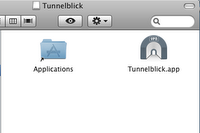
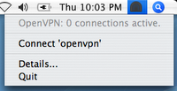
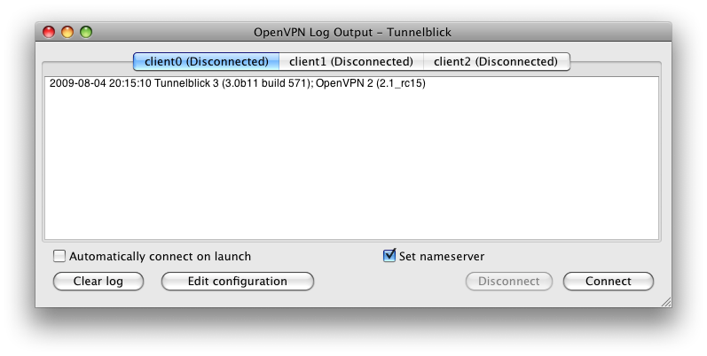

defaults write com.openvpn.tunnelblick showAllDurations 1| SUEnableAutomaticChecks | If set, causes Tunnelblick to check for updates periodically. This is set or cleared depending on the user's response the second time Tunnelblick is run. |
| SUSendProfileInfo | Set if the user agreed to send anonymous information about the system configuration to Tunnelblick. The default is cleared. |
| SUHasLaunchedBefore | Set if Tunnelblick has been run for this user and “SUEnableAutomaticChecks” has been set or cleared. |
| SULastCheckTime | The date and time Tunnelblick last checked for updates. |
| showAllDurations | If set, causes Tunnelblick to show a timer for all connections, open and closed. The default is cleared, so all durations are not shown. |
| showConnectedDurations | If set, causes Tunnelblick to show a timer for all connections that are open. The default is set, so connection durations are shown. |
| detailsWindowFrame | The size and position of the “OpenVPN log” window when it was last closed. |
| detailsWindowFrameVersion | The version of Tunnelblick that saved the detailsWindowFrame preference. |
| doNotMonitorConfigurationFolder | If set, Tunnelblick will not monitor changes to ~/Library/openvpn. |
| placeIconInStandardPositionInStatusBar | If set, Tunnelblick will place the icon in the standard position in the Status Bar, to the left of all other icons. If cleared and the system supports it, an undocumented system method is used to force the icon to be immediately to the right of the Spotlight icon. |
| For each configuration file in ~/Library/openvpn, the following two preferences may appear: | |
| ZZZuseDNS (“ZZZ” is the name of the configuration file.) | Corresponds to the configuration's “Set nameserver” checkbox. The default is set. |
| ZZZautoConnect (“ZZZ” is the name of the configuration file.) | Corresponds to the configuration's “Automatically connect on launch” checkbox. The default is cleared. |
| openvpnstart start conf‑path port [ use‑scripts [ skip‑check [ skip‑script‑security ] ] ] | ||
| Creates an OpenVPN connection. | ||
| conf‑path | is the path to the .ovpn or .conf file which describes the connection. | |
| port | is the port to use when creating the connection. | |
| use‑scripts | is 1 to indicate that the “client.up.osx.sh” and “client.down.osx.sh” scripts should be called before the connection is created and after it is destroyed, respectively. 0 (the default) indicates the scripts should not be called. |
|
| skip‑check | is 1 to indicate that the check of permissions on the configuration file should be skipped. (Can be used if
the configuration file is not on a volume with Unix or OS X permissions.) 0 (the default) indicates the permissions should be checked (for greater security). |
|
| skip‑script‑security | is 1 to indicate that the "--script-security 2" arguments should not be sent to OpenVPN. 0 (the default) indicates the arguments should be sent. ("--script-security 2" is available only on OpenVPN versions 2.1_rc9 and later.) |
|
| openvpnstart kill process‑id | ||
| Destroys an OpenVPN process (and closes any open connection it is managing). | ||
| process‑id | is the process number of the OpenVPN process which is managing the connection that should be destroyed. | |
| openvpnstart killall | ||
| Destroys all OpenVPN processes (if any) and closes any open connections. If any processes are destroyed, a message with the number destroyed is placed in the Console Log. | ||
| openvpnstart OpenVPNInfo | ||
| Invokes OpenVPN with no arguments, resulting in a message containing OpenVPN version and usage information. | ||